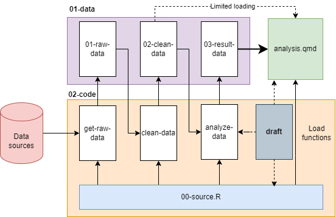

72 Các lưu ý phân tích thực tế
72.1 Cách thức tìm insights & đặt câu hỏi
72.1.1 Đặt câu hỏi
Khi phân tích dữ liệu, ta cần nắm rõ vấn đề kinh doanh trước khi bắt tay đi vào phân tích dự báo.
- Với các bài toán có thể dự báo & ứng dụng học máy - như dự báo khả năng khách hàng rời bỏ, bán chéo,… cần đặc biệt lưu ý về phương thức áp dụng trong thực tế sau khi xây dựng mô hình.
- Với các bài toán phân tích khám phá - cần phải đặt ra các câu hỏi (
hypothesis) và tìm cách trả lời các câu hỏi đó. Các kỹ thuật đặt câu hỏi như sau:- Cách 1: Đặt các câu hỏi dạng yes/no question.
- Cách 2: Đặt các câu hỏi mang tính định lượng sau khi đã trở lời các câu hỏi dạng yes/no
Ví dụ:
- Giả thuyết loại 1: Tự động tăng hạn mức thẻ tín dụng giúp ngân hàng tăng dự nợ thẻ tín dụng? (Trẳ lời dạng có/không)
- Giả thuyết loại 2: Tự động tăng hạn mức giúp tăng bao nhiêu dư nợ thẻ tín dụng? (câu hỏi định lượng)
Khi phân tích, đặc biệt tránh các câu hỏi thiếu cụ thể từ đơn vị kinh doanh. Ví dụ: Hành vi của khách hàng sau khi phàn nàn lên tổng đài là gì?
Tuy nhiên, thực tế các đơn vị khi yêu cầu phân tích thường chỉ đưa ra được các câu hỏi dạng này, khiến cho hoạt động phân tích có nhiều khó khăn và thiếu tính cụ thể. Do đó, ta có thể đặt câu hỏi ngược lại để khai thác thêm thông tin như:
- Theo anh/chị, khách hàng sau khi phàn nàn thì có thể có các phản ứng như thế nào, điều này ảnh hưởng đến kết quả kinh doanh ra sao (quy về câu hỏi loại 1 và 2)
- Nếu giả sử kết quả phân tích ra đúng/không đúng như phỏng đoán của anh chị, thì anh/chị sẽ làm gì tiếp để giảm thiểu các ảnh hưởng tiêu cực trên?
Đặt câu hỏi đúng để hiểu chính xác vấn đề kinh doanh là kỹ năng đặc biệt quan trọng trong phân tích dữ liệu. Nếu không, rất có thể các dự án phân tích đang cố gắng tìm giải pháp đúng cho một vấn đề sai.
72.1.2 Cách tìm kiếm insights
Bên cạnh các bài toán tường minh về dự báo, phần lớn ứng dụng thực sự lại nằm ở việc phân tích khám phá insights. Các kỹ thuật thường dùng có thể chia như sau:
| STT | Vấn đề | Kỹ thuật |
|---|---|---|
| 1 | Tìm mối quan hệ giữa 2 biến liên tục. VD: Chi tiêu và thu nhập có mối quan hệ như thế nào | Hệ số tương quan, mô hình tuyến tính |
| 2 | Mối quan hệ 2 biến rời rạc. VD: Yếu tố khu vực & vị trí bán ảnh hưởng đến tỷ lệ gian lận như thế nào | \(\chi^2\), lift, WoE, Prop test |
| 3 | Mối quan hệ giữa 1 biến rời rạc & 1 biến liên tục. VD: Chi tiêu bình quân theo các phân khúc khách hàng khác nhau như thế nào? | ANOVA, WoE |
| 4 | Tìm ảnh hưởng đến thời gian xảy ra 1 sự kiện. VD: Tỷ lệ CR theo thời gian với các chương trình khuyến mãi thế nào? | Phân tích cohort, survival analysis, phân tích vintage |
| 5 | Phân nhóm khách hàng. VD: 100K khách hàng hiện hữu có thể phân thành các nhóm đặc thù như thế nào? | k-means & phân tích khám phá |
Bên cạnh đó, để tìm ra các yếu tố quan trọng ảnh hưởng đến 1 chỉ số - ví dụ: các yếu tố quan trọng nhất ảnh hưởng đến khả năng khách hàng rời bỏ, ta có thể xây dựng mô hình học máy đơn giản (VD: GBM, XGBoost), không cần tuning để lấy ra nhanh chóng các biến có khả năng ảnh hưởng nhiều nhất.
72.2 Cách tổ chức project
Project
|-- my-project.Rproj
|-- README
|-- 01-data
|-- 01-raw-data
|-- 01-customer.rda
|-- 02-transaction.rda
|-- ...
|-- 02-clean-data
|-- 01-customer-clean.rda
|-- 02-transaction-clean.rda
|-- 03-data-analysis.rda
|-- 03-result-data
|-- customer-summary.rda
|-- segment-impact.rda
|-- 02-code
|-- 00-source.R
|-- 01-get-customer-raw.R
|-- 02-get-transaction-raw.R
|-- 11-clean-customer.R
|-- 12-clean-clean-transaction.R
|-- 21-customer-summary.R
|-- 22-customer-impact.R
|-- 03-output (optional)
|-- 01-customer-flow.png
|-- 02-anova-chart.png
|-- analysis.pptx
20230516-customer-analysis.qmdLuồng phân tích có thể thể hiện trực quan hơn như sau:

Trong đó:
- File
.proj: File R project READ.ME: File text mô tả description của phân tích- Thư mục
02-code- để chứa các script làm sạch và phân tích. Có thể chia nhỏ thành các sub-folder con theo mục đích, nhưng không cần thiết để tránh bị phân mảnh. Ta có thể chia như sau:00-source.R: Các function viết thêm khi đưa vào project- Bước 1: Lấy dữ liệu thô. Các script lấy raw data có thể đánh số từ 01-10, thêm tiền tố:
get. Ví dụ:01-get-customer.R,02-get-transaction.R. Ở các script này có thể làm sạch ở mức độ kỹ thuật như convert từ text về date, chuyển đổi text thành factor,… nhưng hạn chế lọc hoặc đưa thêm các logic mới vào. Kết quả đầu ra các script này được lưu trong folder01-data/01-raw-data - Bước 2: Làm sạch dữ liệu. Các script clean làm sạch ở tầng logic, hay đã có các bước biến đổi, chuẩn hóa, lọc để lấy ra 1 tập dữ liệu phục vụ phân tích,… Nên tách nhỏ từng mục đích, output của mỗi script nên lưu thành 1 file khác nhau, trong folder
01-data/02-clean-data - Bước 3: Phân tích dữ liệu. Các bước phân tích (đã được chuẩn hóa và làm sạch). Kết quả của các bước này sẽ được lưu tại folder
01-data/03-result-data. File phân tích cuối cùng.qmdsẽ load dữ liệu từresult-datađể tăng tốc độ xử lý.
- Folder
01-data: Chứa các file kết quả đầu ra của các nhóm script. analysis.qmd: Là file chứa kết quả trình bày phân tích cuối. Ở file này, ta nên hạn chế load dữ liệu nặng mà nên sử dụng kết quả đầu ra của các script trước để gia tăng tốc độ knit